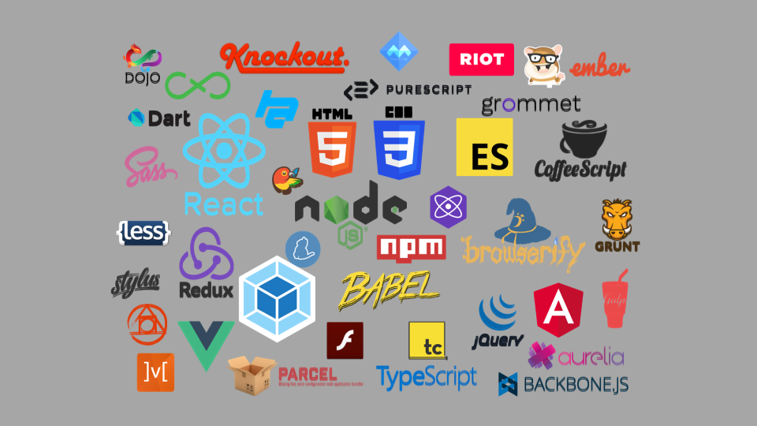

JavaScript
JavaScriptの役割
| 言語 | 役割 |
|---|---|
| HTML（マスター済み） | コンテンツの指定 タイトル，文章，画像などの記述 |
| CSS（マスター済み） | コンテンツの装飾 色，大きさ，配置などの指定 |
| JavaScript | ユーザー操作，イベント発生による動きを実現 （わりとなんでもできる） |
JavaScriptとは
JavaScript ≠ JAVA
JavaScriptとJAVAの違い
| JavaScript | JAVA |
|---|---|
| フロントエンド言語 | サーバサイド言語 |
| カモミール | カモ |
| オーストラリア | オーストリア |
| ハムスター | ハム |
| メロンパン | メロン |
Webアプリケーションに欠かせないJavaScript

言語別人気ランキング（2020年）
| 言語 | 使用している開発者（%） |
|---|---|
| JavaScript | ||||||||||||||||||||||||||||||||||||||||||||||||||||||||||||||||||||||69.7% |
| HTML/CSS | ||||||||||||||||||||||||||||||||||||||||||||||||||||||||||||||62.4% |
| SQL | |||||||||||||||||||||||||||||||||||||||||||||||||||||||||56.9% |
| Python | ||||||||||||||||||||||||||||||||||||||||||41.6% |
| JAVA | ||||||||||||||||||||||||||||||||||||||38.4% |
| C# | ||||||||||||||||||||||||||||||||32.3% |
| TypeScript | ||||||||||||||||||||||||||||28.3% |
| PHP | ||||||||||||||||||||||||||25.8% |
JavaScript周辺の技術

よく使われる技術
| 技術 | 特徴 |
|---|---|
| - JavaScriptのライブラリ． - ユーザ操作イベントやアニメーションを実現 - ✅ 生JSと比較して短くかける． - ✅ webアプリケーションで広く普及している． - ✅ 導入が簡単． - ✅ 学習コストが低い． - 🔼 難しいことをやろうとすると複雑になる． - まずはここから！ | |
| - JavaScriptのライブラリ． - ✅ モダンなwebアプリケーション（SPA）を実現 - ✅ 高速！ - ✅ TypeScriptでの実装も可能 - ✅ スマホアプリも見据えた開発が可能． - 🔼 学習コスト - 🔼 環境構築がややハードル． - （私はReactが好き） | |
| - サーバサイドでJavaScriptを動かす技術． - ✅ フロントもサーバもJavaScriptで書ける．．！ - ✅ サーバサイドの中では環境構築が容易 - 🔼 難しいことをやろうとすると複雑になる． |
JavaScriptを書く
書き方
<script></script>の間に処理を記述！
書く場所
- htmlファイルの
</body>のすぐ上に書こう！ - ほかにもいくつか書ける場所があります．
- 別にファイルを作るやり方もあります．
まず動かす！！
alert()console.log()
文字列は「
'」か「"」で囲む．どちらでもOK！
<script>
alert('Hello world');
console.log('Hello world');
</script>